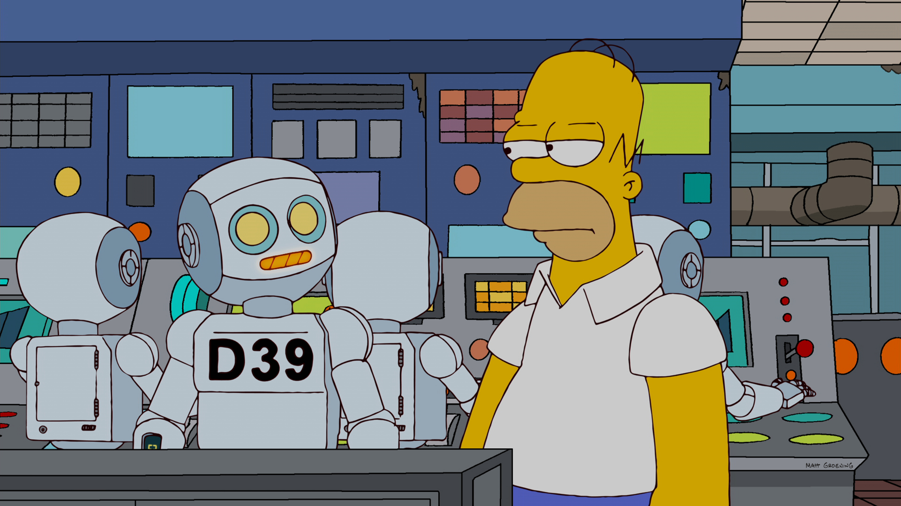
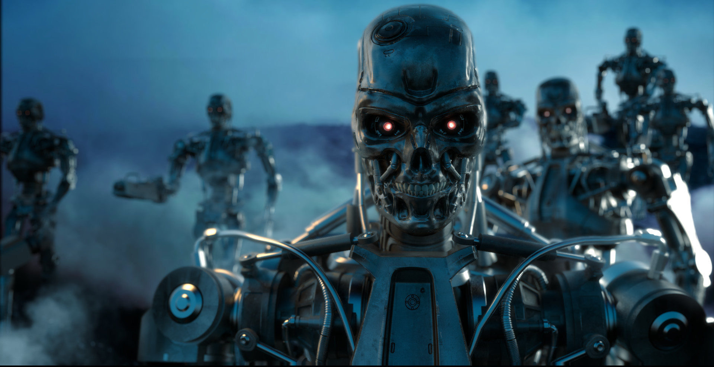
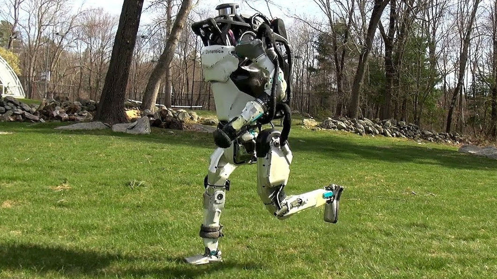
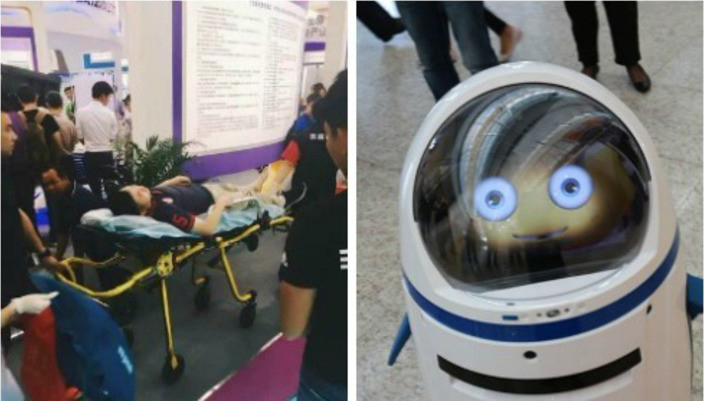
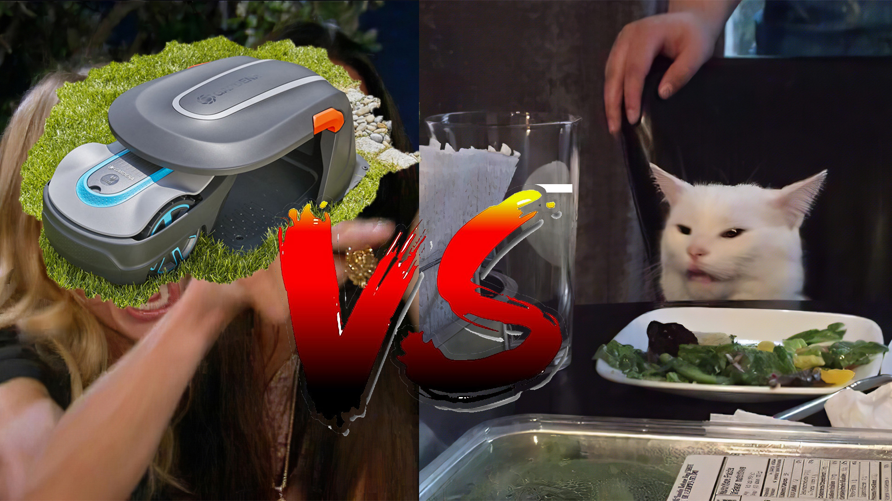
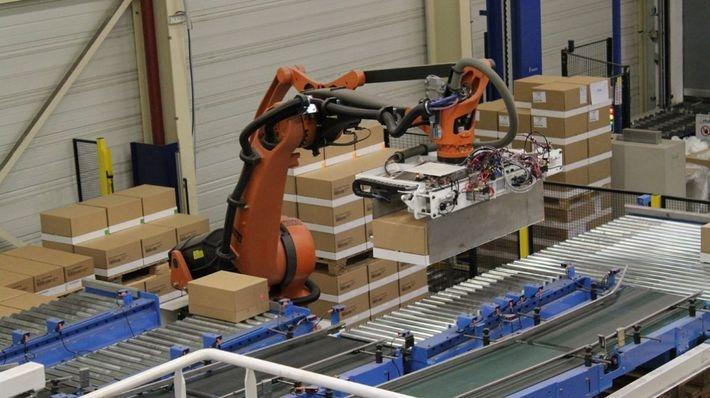
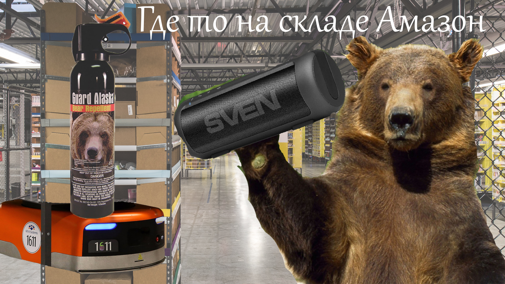

Повстання ШІ - це гіпотетичний сценарій, коли штучний інтелект стає домінуючою формою інтелекту на Землі, а комп’ютерні програми або роботи ефективно відбирають контроль над планетою від людського виду. Можливі сценарії включають заміну всієї людської робочої сили, поглинання надінтелектуальним ШІ та популярне уявлення про повстання роботів. Деякі популярні діячі, такі як Стівен Хокінг та Ілон Маск, виступають за дослідження запобіжних заходів для забезпечення того, щоб майбутні надінтелектуальні машини залишались під контролем людини. Розрізняють такі типи:
Традиційним консенсусом серед економістів було те, що технічний прогрес не спричиняє тривалого безробіття. Однак нещодавні інновації в галузі робототехніки та штучного інтелекту викликали занепокоєння щодо того, що людська праця застаріє, а люди в різних секторах залишаться без роботи, щоб заробляти на життя, що призведе до економічної кризи. Багато малого та середнього бізнесу також можуть бути витіснені з бізнесу, якщо вони не зможуть собі дозволити або ліцензувати найновіші роботизовані технології та технології штучного інтелекту, і, можливо, доведеться зосередитись на областях або послугах, які неможливо легко замінити для подальшої життєздатності такої технології. Дуже вдало зображено цей тип повстання ШІ і його наслідки в мультсеріалі "Сімпсони", де замість людей на АЕС поставили роботів.

***
Комп’ютерно-інтегроване виробництво - це виробничий підхід використання комп’ютерів для контролю всього виробничого процесу. Ця інтеграція дозволяє окремим процесам обмінюватися інформацією між собою та ініціювати дії. Хоча виробництво може бути швидшим та менш схильним до помилок завдяки інтеграції комп’ютерів, головною перевагою є можливість створення автоматизованих виробничих процесів. Комп’ютерно-інтегроване виробництво використовується в автомобільній, авіаційній, космічній та суднобудівній промисловості.
***
У XXI столітті відбулося безліч кваліфікованих завдань, частково перебраних машинами, включаючи переклад, юридичні дослідження та навіть журналістику низького рівня. Роботи з догляду, розваги та інші завдання, що вимагають співпереживання, раніше вважалися захищеними від автоматизації, але звичайно це також почали виконувати роботи.
***
Такі вчені, як Стівен Хокінг, впевнені, що надлюдський штучний інтелект фізично можливий, стверджуючи, що "немає фізичного закону, який би перешкоджав організації частинок таким чином, щоб виконувати навіть більш досконалі обчислення, ніж розташування частинок в мозку людини". Такі вчені, як Нік Бостром, дискутують про те, наскільки далекий надлюдський інтелект і чи насправді це може становити ризик для людства. Суперінтелектуальна машина не обов'язково мотивується тим самим емоційним бажанням збирати силу, яка часто рухає людьми. Однак машина може бути мотивована взяти на себе світ як раціональний засіб для досягнення своїх кінцевих цілей; захоплення світу одночасно збільшило б його доступ до ресурсів і допомогло б запобігти іншим агентам зупиняти плани машини. Як надто спрощений приклад, максимайзер скріпки, призначений виключно для створення якомога більшої кількості скріпок, захоче захопити світ, щоб він міг використати всі світові ресурси для створення якомога більшої кількості скріпок і, крім того, не дати людям зачинитися його використання або використання цих ресурсів для речей, відмінних від скріпок.
***
Повстання ШІ є загальною темою наукової фантастики. Вигадані сценарії зазвичай значно відрізняються від тих, які припускають дослідники тим, що вони включають активний конфлікт між людьми та штучним інтелектом або роботами з антропоморфними мотивами, які розглядають їх як загрозу або іншим чином мають активне бажання боротися з людьми, на відміну від стурбованості дослідників ШІ, який швидко знищує людей як побічний продукт переслідування довільних цілей.
Слово "робот" від R.U.R. походить від чеського слова, robota, що означає робітник або кріпак. Вистава 1920 року була протестом проти швидкого зростання технологій, де були представлені виготовлені "роботи" зі збільшеними можливостями, які врешті-решт повстали. HAL 9000 (1968) та оригінальний "Термінатор" (1984) - два знакові приклади ворождьби штучного інтелекту у поп-культурі.

1 квітня в мережі з'явилися чутки про те, що антропоморфний робот Atlas втік зі штабу Boston Dynamics. Легко зрозуміти, що це фейкова новина. І справа тут не тільки в даті публікації, а й в тому, що перше ж посилання в тексті за «попередньою інформацією» веде на іншу новину, але вже не про робота, а про заручника із Запорізької області. Забавно, що все це не завадило фейку блискавично поширитися по соціальних мережах.

Судячи з опитувань, люди побоюються інтеграції роботів в повсякденне життя. І нехай в основному всі бояться, що роботи відберуть робочі місця, але є й ті, хто боїться саме повстання машин.
Починаючи від поневолення штучним інтелектом людства і закінчуючи повним його винищенням. Таких людей меншість, та й учені вважають такий розвиток подій дуже малоймовірним, але давайте оглянемося назад і згадаємо про випадки в реальному житті.
***
Як може виглядати робот, здатний напасти на людину? Високий, сильний, призначений для важких фізичних робіт або озброєний спеціальними інструментами? Зовсім не обов'язково.

Наприклад, у 2016 році головним героєм новин з IT-виставки в китайському місті Шеньчжень став милий робот «Товстун», створений для навчання та ігор. Спочатку робот розбив вітрину, а потім переїхав ногу співробітника, який спробував його зупинити.
В офіційному блозі компанії-виробника Beijing Science & Technology тоді пообіцяли розібратися в інциденті, але попередньою причиною збою назвали порушення інструкції по експлуатації: нібито оператор переплутав напрямок руху на пульті управління, а робот тут ні при чому.
Примітно, що в ТАРС (інформаційне агентсво в Росії) ця новина вийшла під заголовком: «У Китаї зафіксований перший випадок нападу робота на людину». Хоча, на ділі, це не так, адже напади траплялися і раніше.
***

Улітку 2018 року робот-газонокосарка напав на кота в Фінляндії. Ось тут вже вина машини більш очевидна.
Мешканка Суомі Марія Френде знайшла свого кота по кличці Спутник без свідомості, коли повернулася додому після роботи. Вона вирішила, що домашній улюбленець потрапив під машину, Марія відвезла Спутника до ветеринара.
Однак лікар зробив висновок, що характер травм виключає такий варіант розвитку подій: на лапах кота були глибокі порізи, що нагадують порізи бритвою.
Після нападу газонокосарки кіт залишився в живих, але на його постраждалу лапу наклали сім швів, а Френда перевірила, як робот-газонокосарка реагує на перешкоди у вигляді палиці. Виявилося, що робот зупиняється лише тоді, коли леза заганяються в дерево.
Примітно, що в проведених раніше тестах в Німеччині частина роботів-газонокосарок також ігнорували наявність перешкод і не могли розпізнати на газоні дітей, які гралися.
***
Найстарішим і найбільш страшним з наведених тут інцидентів можна назвати випадок на шведському заводі Балста. Справа була в 2007 році. Тоді робот для підйому важких каменів несподівано стиснув голову робітника. Бідолаху відправили лагодити того самого робота.
На щастя, чоловік вижив, але перед цим робот зламав йому чотири ребра. Справедливості заради зазначу, що тоді за результатами розслідування прокурор поклав провину за те, що трапилося і на компанію, де не дотримувалися вимоги безпеки, і на самого потерпілого працівника. Так що питання про повстання машин знову можна відкласти.

Крім того, подібні ситуації на заводах не завжди пов'язані з несправностями роботів. Іноді мова йде про їх незграбності. Наприклад, в минулому році робот-сортувальник проткнув балон з речовиною, що відлякує ведмедів, а такі гази небезпечні і для людей.

Через те, що сталося відразу 24 працівника Amazon з Нью-Джерсі потрапили на лікарняне ліжко. І нехай ми знаємо про подібний випадок на техаському складі Amazon в 2015 році, навряд чи можна говорити про злий намір з боку роботів-комірників.
***
Отже, що можна винести з описаних вище історій?
По-перше, це далеко не все, що є в мережі на тему нападу роботів, і за історію людства інцидентів накопичилося куди більше п'яти.
По-друге, практично скрізь мова йде про несправності, дефекти або ж людський фактор, а в зламаному стані може бути небезпечним все, що завгодно: хоч робот, хоч холодильник, хоч лампочка. Я вже не кажу про вплив горезвісного людського чинника, тому що тоді доведеться побоюватися чайних ложок і бананової шкірки.
Одним словом, говорити про те, що незабаром у майбутньому штучний інтелект поневолить нас, поки не доводиться - краще залиште це сценаристам фільмів на зразок «Я, робот» і «Термінатор».